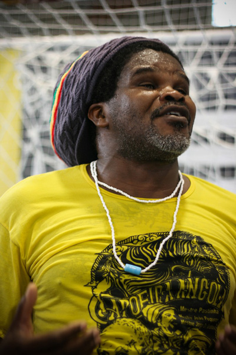

Jogo de dentro com Jogo de Dentro
«Лучше поздно, чем никогда» или „пока лето не кончилось, пост про летний эвент считается“.
В июне 2011 года нам повезло. На семинар к моей группе Mundo capoeira приехал Mestre Jogo de Dentro.
Мне не очень интересно, почему мастер капоэйры Ангола приехал на семинар к контемпорам. Что у этих мастеров в головах — непонятно. Я вполне допускаю, что у Mestre Dende и Mestre Jogo de Dentro есть свои личные истории и связи, о которых мы не знаем и не узнаем. Если вам интересно, можете пообсуждать в комментариях.
Мне интересно другое — как за несколько часов мы судорожно хватали знания и впускали в себя другую капоэйру и пытались объяснить телам новые движения и почувствовать другой темп и ритм игры. Ангольские тренировки достались всем — и продолжающим и новичкам, и все были одинаково в шоке.
Вообще слово «шок» для меня ключевое в описании мастера Jogo de Dentro. Во-первых, шок от того, что он существует. Он живой. Он огромный и черный, со своими многочисленными шапками на каждый день, под которыми живут его дреды (кажется, им лет 20, а то и больше). Он ужасно вежливый, я таких еще не встречала в капоэйре. Моя бабушка сказала бы, что он интеллигентный. Точнее, с южным акцентом — «интеллихентный». Он обязательно жмет всем руки при встрече так, что даже мужские ладони тонут в его черных. Тот, кого он обнимает, на миг исчезает где-то там, внутри.
Я, наверно, сейчас пишу как фанат. Это не так уж далеко от истины. Этот мастер был первым, кого я увидела, когда при мне ткнули пальцем в экран и сказали: „Смотри, это капоэйра Ангола“. Позже мой фанатский порыв поддержал мой тренер, так что для нас семинар стал особенным торжеством благодаря приезду Жогу ди Дентру. Мы подошли к нему, держась за руки, как школьники, подталкивая друг друга вперед («Ну давай, говори!» «Что говорить?» „Ну говори что-нибудь!“), краснея, бледнея и стремительно забывая португальский. Единственное, на что нас хватило поначалу, это на что-то вроде «Это моя ученица» «А это мой тренер» „Местре, мы давно мечтали вас увидеть, и в прошлом году поехали специально в Финляндию, а там вулкан.. и он.. а вы не приехали..а мы…“
Смешно было. А потом было уже все расслабленно и спокойно. Мастера ведь так умеют — взять и успокоить тебя. И по-португальски сразу говоришь как ни в чем ни бывало. С Жогу ди дентру были разговоры вскользь про Анголу, были очень серьезные разговоры про оришас, и всего мало, конечно.
Тренировок не хватало катастрофически. Впрочем, мастер и не строил иллюзий будто за два часа мы научимся делать то, что он учится делать до сих пор. Как я понимаю, ему очень важно составить в мире капоэйры правильное (по его меркам и меркам его школы) представление о капоэйре Ангола, развенчать мифы и внести ясность. Он объяснял на примере конкретных связок, как работает ум в анголе, как тело перемещается в пространстве, по какой логике, что вообще происходит) Все тщательно, но без потери времени. И потом делаем связку, пока не свалимся. Сваливаться перед Жогу ди Дентру было стыдно, поэтому работали все как никогда, на совесть. Ну и на ажиотаже, конечно — мастер новый, движения для большинства незнакомые, тело с удовольствием принимает новые формы — почему нет. И вот ведь удивительно — капоэйристу хоть что покажи, он тут же пробует делать, потому что тело жаждет двигаться, требует экспериментов и новых странных положений в пространстве. А если задачка сложная — так оно интересней вдвойне. Анголу не хотелось отпускать очень долго, и сразу после тренировки было совершенно непонятно, что делать под ритм бенгелы, поэтому старшие долго отходили на инструментах и по краям роды, а новички, у которых своя ангольская тренировка была еще впереди, пользовались моментом.
Жогу в роде, ясное дело, не играл. Держал беримбау и вел роду. И мне впервые не хотелось идти играть, а хотелось как можно дольше стоять в одной с ним батерии и наслаждаться тем, как качает музыка.
В заключительный день семинара была большая ангольская рода, на которой Жогу играл со всеми старшими и с избранными счастливчиками из учеников. То, что досталось всем, и так ясно. Кстати, ловил мастер всех на одном и том же движении. Молодые лихие бразильцы записывали каждую секунду своих игр с легендарным мастером, и даже mestre Dende пристраивался у батерии с фотоаппаратом. Благодаря моему мастеру и мне удалось поиграть с Жогу. Ничего толком не напишу, потому что не помню. Помню свою счастливую улыбку у pe do berimbau и ощущение, что сейчас произойдет чудо и исполнится мечта. Вообще не про капоэйру речь, понимаете? Глобальное что-то. Момент жизни, который сейчас записывается в раздел: «самые крутые мгновения». И помню еще ощущение, которое объяснило имя мастера. Когда ты играешь с Жогу ди дентру, он везде. Он вокруг тебя. И дело даже не в том, что куда бы ты ни повернулся — везде Жогу. А он просто тебя обволакивает своей игрой, своей энергией, своей силой — назовите как хотите. И там с тобой играет. Позволяет тебе сделать пару шагов или не позволяет. Направляет тебя в одну или другую сторону. Что хочет, то и делает, а ты и рад)
Такие дела, друзья.
И да, капоэйра одна, просто футболки у всех разные.
Берегите себя, играйте с радостью.
Фото Botafogo
